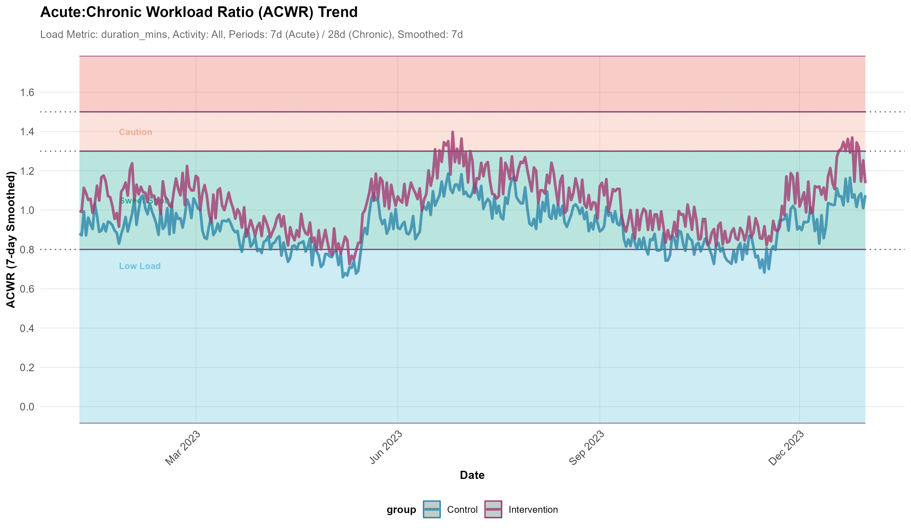
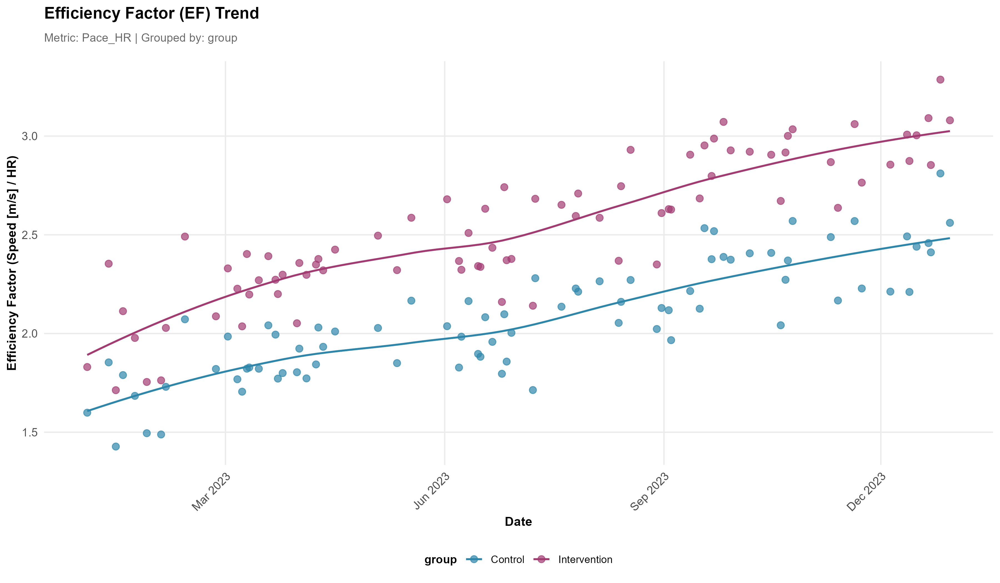
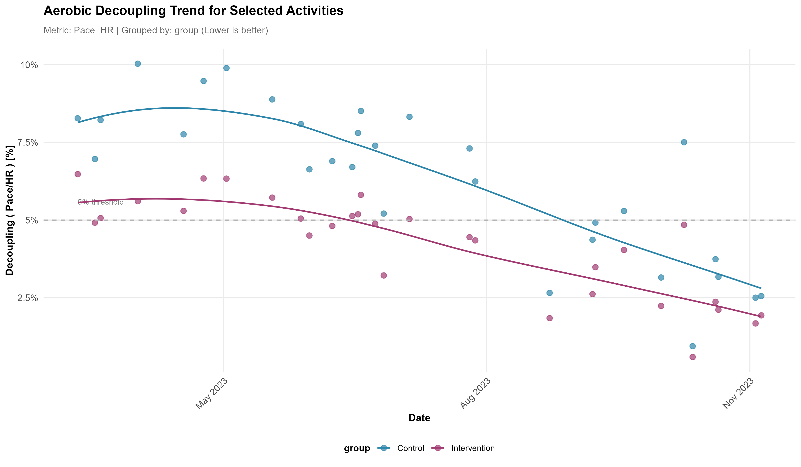

A Comprehensive R Framework for Exercise Physiology Analytics


📖 Documentation • 🚀 Quick Start • 📊 Examples • 💬 Issues

🎯 Overview
Athlytics provides a comprehensive computational framework for longitudinal analysis of exercise physiology metrics using local Strava data exports. Designed for sports scientists, coaches, and athletes seeking standardized, reproducible workflows to quantify training load, performance, and physiological adaptation.
Core Capabilities
- Training Load Monitoring — ACWR for injury risk assessment
-
Aerobic Fitness — Efficiency Factor (EF) analysis
- Cardiovascular Metrics — Decoupling and TSS calculations
- Privacy-First — Local processing, no API keys required
✨ New in v1.0.0: Direct ZIP file support — load Strava exports without manual extraction
✨ Key Features
🔒 Privacy-First Design
Local processing only • No API authentication • Complete data ownership • Works offline
📊 Scientific Rigor
ACWR injury risk monitoring • Efficiency Factor analysis • Cardiovascular decoupling • Training Stress Score
📦 Installation
Stable Release (CRAN)
install.packages("Athlytics")Latest Version 1.0.0 (GitHub - Recommended)
# Install remotes if needed
install.packages("remotes")
# Get the latest v1.0.0 with new features
remotes::install_github('HzaCode/Athlytics')💡 Tip: Version 1.0.0 on GitHub includes direct ZIP file support and enhanced features. CRAN update is pending approval.
🚀 Quick Start
📥 Step 1: Export Your Strava Data
- Go to Strava Settings → My Account
- Click “Get Started” under “Download or Delete Your Account”
- Select “Download Request” ⚠️ (not Delete Account!)
- Wait for email with download link (usually < 2 hours)
- Download the ZIP file (e.g.,
export_12345678.zip)
📖 Official Strava Export Guide • ⏱️ Processing: 30 min - 2 hours • 📦 Size: 10-500 MB
💻 Step 2: Load and Analyze
🏃 Single Athlete Analysis
library(Athlytics)
# Load data directly from ZIP (no extraction needed!)
activities <- load_local_activities("athlete1_export.zip")
# Calculate and visualize training load
acwr_data <- calculate_acwr(activities_data = activities)
plot_acwr(acwr_data, highlight_zones = TRUE)👥 Multi-Athlete Cohort Studies
library(dplyr)
# Load activities for multiple athletes
athlete1 <- load_local_activities("athlete1_export.zip") %>%
mutate(athlete_id = "athlete1", group = "intervention")
athlete2 <- load_local_activities("athlete2_export.zip") %>%
mutate(athlete_id = "athlete2", group = "intervention")
athlete3 <- load_local_activities("athlete3_export.zip") %>%
mutate(athlete_id = "athlete3", group = "control")
# Combine data
cohort_data <- bind_rows(athlete1, athlete2, athlete3)
# Calculate ACWR for each athlete using group_by
cohort_acwr <- cohort_data %>%
group_by(athlete_id) %>%
do(calculate_acwr_ewma(.))
# Calculate reference percentiles
reference_bands <- cohort_reference(
data = cohort_acwr,
metric = "acwr_smooth",
by = c("group")
)
# Compare individual athlete against cohort
individual_acwr <- cohort_acwr %>% filter(athlete_id == "athlete1")
plot_with_reference(
individual = individual_acwr,
reference = reference_bands
)📚 Complete Tutorial with Real Examples
📊 Core Analyses
All functions return tidy
tibbleoutputs ready for statistical analysis
1️⃣ Training Load Monitoring (ACWR)
Monitor training load ramping to identify injury risk periods
Key Metrics
Acute Load (7-day) • Chronic Load (28-day) • ACWR Ratio • Risk zones (0.8-1.3 sweet spot, >1.5 danger)
Use Cases
⚠️ Injury risk prediction • 📈 Training load progression • 🔄 Return-to-play monitoring
# Calculate ACWR
acwr_data <- calculate_acwr(activities_data = activities, load_metric = "duration_mins")
# Visualize with risk zones
plot_acwr(acwr_data, highlight_zones = TRUE)
📖 ACWR Methodology & Validation
2️⃣ Aerobic Efficiency (EF)
Track aerobic fitness adaptations over time
Key Metrics
Pace/HR Ratio (runs) • Power/HR Ratio (cycling) • Normalized Power efficiency • Fitness trend analysis
Use Cases
🏃 Aerobic base development • 📊 Training effectiveness • 🎯 Periodization monitoring
# Calculate Efficiency Factor
ef_data <- calculate_ef(activities_data = activities, ef_metric = "Pace_HR")
# Plot with trend line
plot_ef(ef_data, add_trend_line = TRUE)
3️⃣ Cardiovascular Decoupling
Quantify cardiovascular drift during endurance efforts
Key Metrics
First vs second half comparison • Decoupling percentage • Quality thresholds (<5% excellent) • Aerobic endurance indicator
Use Cases
🔬 Aerobic fitness assessment • 🌡️ Heat/fatigue adaptation • 📉 Overtraining detection
# Calculate decoupling
decoupling_data <- calculate_decoupling(activities_data = activities)
# Visualize trends
plot_decoupling(decoupling_data, decouple_metric = "Pace_HR")
🔬 Advanced Features
📊 Statistical Analysis
Cohort comparison • Quality flagging • Statistical testing • Anomaly detection
🎯 Performance Tracking
Personal bests (PR detection) • Training stress balance • Fitness-fatigue dynamics • Periodization tools
📚 Explore Advanced Features with Examples
📝 Citation
If you use Athlytics in your research, please cite:
@software{athlytics2025,
title = {Athlytics: An R Framework for Longitudinal Analysis of Exercise Physiology},
author = {Zhiang He},
year = {2025},
version = {1.0.0},
url = {https://github.com/HzaCode/Athlytics}
}Note: Also cite original methodological papers for specific metrics used (see documentation)
🤝 Contributing
We welcome contributions from the community!
🐛 Report Issues → Open an Issue
💡 Suggest Features → Start a Discussion
🔧 Submit Code → Read CONTRIBUTING.md
📖 Guidelines → Follow our Code of Conduct
🔗 Links & Resources
📖 Documentation • 🐙 GitHub • ❓ Issues • 💬 Discussions • 📦 CRAN